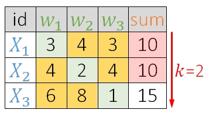

问题重述
给出不同策略求解Top k 问题，并进行分析。
经典TOP K问题
问题拓展
分布式思想
让多台计算机输出自己所分数据中较大的K个值，再做合并
堆
假设我们需要找到第K小的数，我们维护一个规模为K的大顶堆，我们每次读取一个数X
- X>堆顶 丢弃
- 丢弃堆顶，插入数X，重新调整堆
由于摆烂后面还有很多要写的，我们不在这里具体讨论这些思路了。
目前网上的最优思路
HASH+堆
SEE MORE
问题延展：多属性数据集上的TOPK问题
问题背景
Top-k 检索算法研究，是信息检索领域的一个分支研究课题。近年来，随着网络的普及和信息爆炸带来的数据库规模的急剧增长，Top-k 检索问题受到了越来越多的重视和关注。Top-k 检索问题有着非常广泛的实际应用背景，比如网页搜索引擎、数据库检索查询、多媒体数据库信息管理等等。Top-k 检索算法具有较强的研究价值，除了与其广泛而强大的应用背景有关之外，一个理论上的主要原因是，Top-k 检索算法可以显著地摒弃掉与用户或者与实际检索需求无重要关联的大量无关信息与对检索结果没有任何影响的无关数据项，从而较为明显地提高信息检索与查询的质量和效率。
简单定义
Threshold Algorithm
针对经典的 Top-k 检索模型，Fagin 等人相应地提出了 TA 算法（Threshold Algorithm），并证明了 TA 的实例最优性（instance optimality），随后 TA 成为 Top-k 检索研究领域的经典算法。
存储结构
期末考试结束了（我们假设只有W1，W2，W3三节课），某卷王班级，（这个班上只有X1，X2，X3，X4，X5五位同学）的考试成绩出来了！
W1，W2，W3课程的老师分别录入了全班同学的考试成绩（按照学号）
于是我们得到了三张数据表，其中我们用姓名（这里指以学号命名）这个键串联起他们
| 姓名\科目 | W1 |
| X1 | 3 |
| X2 | 4 |
| X3 | 6 |
| X4 | 7 |
| X5 | 8 |
| 姓名\科目 | W2 |
| X1 | 4 |
| X2 | 2 |
| X3 | 8 |
| X4 | 6 |
| X5 | 7 |
| 姓名\科目 | W3 |
| X1 | 3 |
| X2 | 4 |
| X3 | 1 |
| X4 | 6 |
| X5 | 5 |
为了确定究竟谁是这其中的究极摆烂人（全班成绩倒数前二的学生），学委同学收集了这三分成绩表，并算出每个同学的总分。
朴素算法Naive algorithm
朴素算法的思想大概就是
- retrieve all items
- sort
- return top-k
但是分散在多张数据表中的数据让sum的查询变得十分困难。你必须通过
主键在这几张数据表中建立联系，分别查询，再计算出总分，排序，才能找到究极摆烂人是哪一位改进算法
预备
【预备】需要求TOP K小的数据
需要求TOP K小的数据
【预备】聚合函数（评分函数）：假设属性（表）wi的权重是Ai，我们要计算目标元素的ID（索引）为t:
假设属性（表）wi的权重是Ai，我们要计算目标元素的ID（索引）为t:
【预备】阈值函数:在顺序访问到数据表的第i行时，
在顺序访问到数据表的第i行时，
预处理
我们对其进行排序（或者说：
预处理）操作
- 预处理表（sort）
- 顺序访问的第行，求得阈值函数
- 从中获得待处理元素索引的序列
- 处理待处理序列
- 处理
- 处理
- 处理
最后我们得到： - 处理
- 计算出
 - 由上图，我们可知排在处的
- 循环继续，重复步骤2，顺序访问的第行，求得阈值函数
- 重复步骤，由于都已经被处理过了，所以不用加入处理队列，换言之，处理队列为空
- 跳过步骤4、5（处理队列为空）
- 由上图，我们可知排在处的，循环结束
- 于是我们得到了是TOPK小的数字
为什么不继续了呢？
因为对于接下来可能找到的新的sum，一定小于当前阈值，进而大于前K个sum
总结算法思想
SEE MORE
应用范围
- 一般数据记录的方式有两种，一种支持
顺序读（比如链表），另一种支持随机读（比如数组）。TA算法应用系统要求这两种读取算法都满足。 聚类函数是单调的
性能分析
【预备】最优实例（optimality）
【预备】最优比例optimality ratio
根据的定义，我们可以得到这样一个不等式
我们不妨定义 c 为
最优比例。【定义】两个常数：
If there are sorted accesses and random accesses,
- the
sorted access costis - the
random accesscost is - the
middleware costis (the sum of the sorted access cost and the random access cost)
for some positive constants and
【假设】Theorem 6.1
- Assume that the aggregation function is monotone
阈值函数. LetDbe the class of alldatabases. LetAbe the class ofall algorithmsthat correctly find thetop kanswers for for every database and that do not make wild guesses.(我们在这里并做讨论，不然我的作业是永远没法完成了） Then TA is instance optimal over A and D. d:我们假设算法A只顺序访问到深度dthat is, ifis the number of objects seen under sorted access to list ; for ,thena：假设我们随机访问了a个元组some possibly multiple times.In particular,m：一共有m张数据表
【引理】d<a+k
【结论】最优比例上界
我们可以给出
最优比例的一个上界如何得到？
顺序访问:由于我们对某张数据表最多做次访问，那么对所有数据表将最多做次顺序访问，最后乘上常数。随机访问:对于个可能被访问的元组，我们要在剩下的张数据表中查询其他属性的值，以计算出聚类函数，所以我们要进行随机访问，最后乘上常数。然后我们根据
最优比例的定义，可以得到：No Random Access Algorithm—NRA
【预备】上界函数
不妨设是数据表中最新更新的最小数。
我们设下界函数B(R)=f(x1,x2,…,xz,xz+1,…,xm)。其中为已经读出的属性值（不一定连续，不知道原论文为啥这么写，感觉其实表述上有点问题）对于未读出的属性我们用来代替。所以一般情况下，随着算法的进行，B(R)会越来越小(或者保持)。如果对象R从来没有被读取过，那么B(R)=f(M1,M2……Mm)，这个时候B(R)和TA算法的阈值相同。
【预备】下界函数W(R)定义为对象R在函数f下能取到的最小值。用0代替对象R未知的属性值，比如，S={1,…,z}，那么W(R)=f(x1,x2,…,xz,0,…,0)。随着算法的进行，不断的更新W(R)。通常W(R)会越来越大，但也有的情况下，W(R)的值不随算法进行而改变。比如，当f为min函数时，W(R)一直是0，一直到所有的属性都读出后。
用0代替对象R未知的属性值，比如，S={1,…,z}，那么W(R)=f(x1,x2,…,xz,0,…,0)。
随着算法的进行，不断的更新W(R)。通常W(R)会越来越大，但也有的情况下，W(R)的值不随算法进行而改变。
比如，当f为min函数时，W(R)一直是0，一直到所有的属性都读出后。
【定义】
保存下界（即）最大的k个对象
操作：
我们仍然用最开始成绩表的例子做说明。
不过我们这次想要得到总分最高的K=1个人的成绩

- 读取第一行，获得每个对象的,判断
M X1 X2 X3 X4 X5 3 W1 3 No 2 W2 2 1 W3 1 B 6 6 6 6 6 6 W 3 2 1 0 0 3 Tk 对象名 k=1 X1 - 重复1
M X1 X2 X3 X4 X5 3 W1 3 4 yes 2 W2 4 2 1 W3 3 1 B 11 7 6 6 6 7 W 11 6 1 0 0 11 Tk 对象名 k=1 X1 - 跳出循环
- 第一轮
M a b c d e 0.9 W1 0.9 No 0.9 W2 0.9 0.9 W3 0.9 B 2.7 2.7 2.7 2.7 2.7 2.7 W 0.9 1.8 0 0 0 1.8 Tk 对象名 k=1 b - 第二轮
M a b c d e 0.8 W1 0.9 0.8 No 0.8 W2 0.9 0.8 0.9 W3 0.9 0.9 B 2.6 2.6 2.5 2.5 2.5 2.6 W 1.8 1.8 0.8 0.8 0 1.8 Tk 对象名 k=1 b - 第三轮
M a b c d e 0.6 W1 0.9 0.8 0.6 No 0.7 W2 0.9 0.7 0.8 0.8 W3 0.9 0.9 0.8 B 2.5 2.4 2.3 2.2 2.1 2.5 W 1.8 1.8 1.5 1.4 0.8 1.8 Tk 对象名 k=1 b - 第四轮
M a b c d e 0.4 W1 0.9 0.4 0.8 0.6 No 0.5 W2 0.9 0.7 0.8 0.5 0.5 W3 0.9 0.9 0.5 0.8 B 2.3 2.2 2.0 1.9 1.7 2.3 W 1.8 2.2 1.5 1.9 1.3 2.2 Tk 对象名 k=1 b - 第五轮
M a b c d e 0.1 W1 0.9 0.4 0.8 0.6 0.1 Yes 0.1 W2 0.1 0.9 0.7 0.8 0.5 0.3 W3 0.9 0.9 0.3 0.5 0.8 B 1.9 2.2 1.8 1.9 1.4 1.9 W 1.9 2.2 1.8 1.9 1.4 2.2 Tk 对象名 k=1 b
总结算法思想
SEE ALSO
性能分析
摆烂复制粘贴